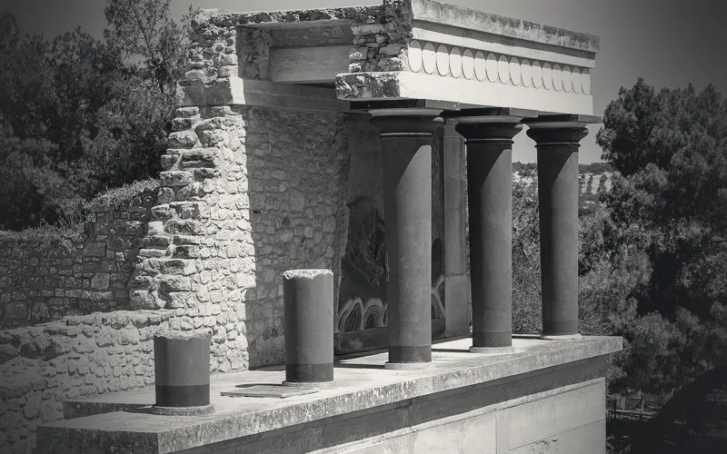
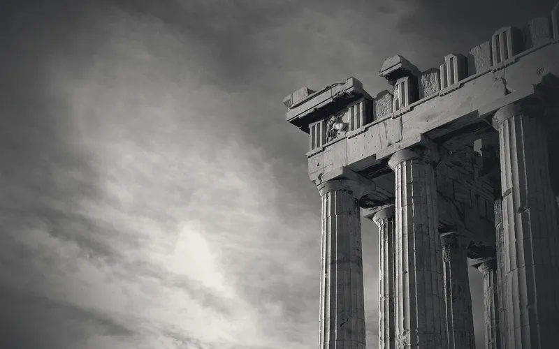
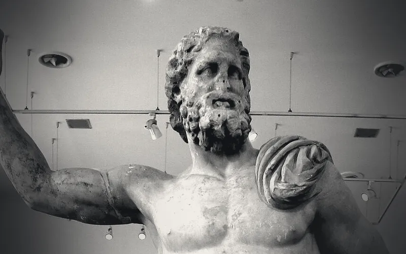

O nascimento do Minotauro
Minos prometeu sacrificar a Poseidon um touro magnífico, mas ficou com ele. Como castigo, a rainha Pasífae se apaixonou pelo animal, e dessa união nasceu o Minotauro.
Apolodoro, Biblioteca III
LUGARΚνωσός
A maior cidade da Creta antiga, perto da atual Heraclião. No mito, era a capital do rei Minos, que mandou construir o Labirinto para esconder o Minotauro.
Minos reinou em Cnossos e, depois de morto, virou juiz aqui embaixo. Odisseu o viu sentado, com um cetro de ouro, julgando as almas.
Minos prometeu sacrificar a Poseidon um touro magnífico, mas ficou com ele. Como castigo, a rainha Pasífae se apaixonou pelo animal, e dessa união nasceu o Minotauro.
Apolodoro, Biblioteca IIIDédalo construiu um prédio de corredores tão confusos que ninguém achava a saída. Teseu entrou com o fio de Ariadne, matou o Minotauro e conseguiu voltar.
Conhecer Teseu →Preso por Minos, Dédalo fez asas de penas e cera para fugir com o filho. Ícaro voou perto demais do sol, a cera derreteu e ele caiu no mar.
Ovídio, Metamorfoses VIII“Um lugar de dança como aquele que, na ampla Cnossos, Dédalo construiu um dia para Ariadne de belas tranças.”
Homero, Ilíada, canto XVIII (tradução livre)

Θησεύς
Herói de Atenas que matou o Minotauro com a ajuda de Ariadne.

Ἀθῆναι
Cidade de Atena, que venceu Poseidon na disputa pela Ática.

Ποσειδῶν
Deus do mar, dos terremotos e dos cavalos.